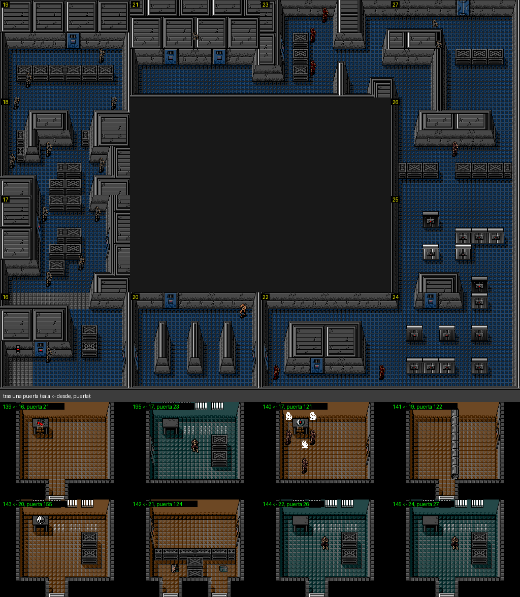
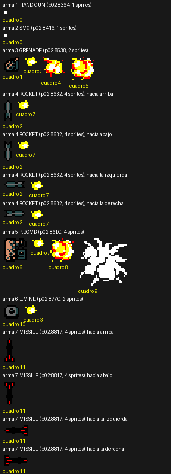
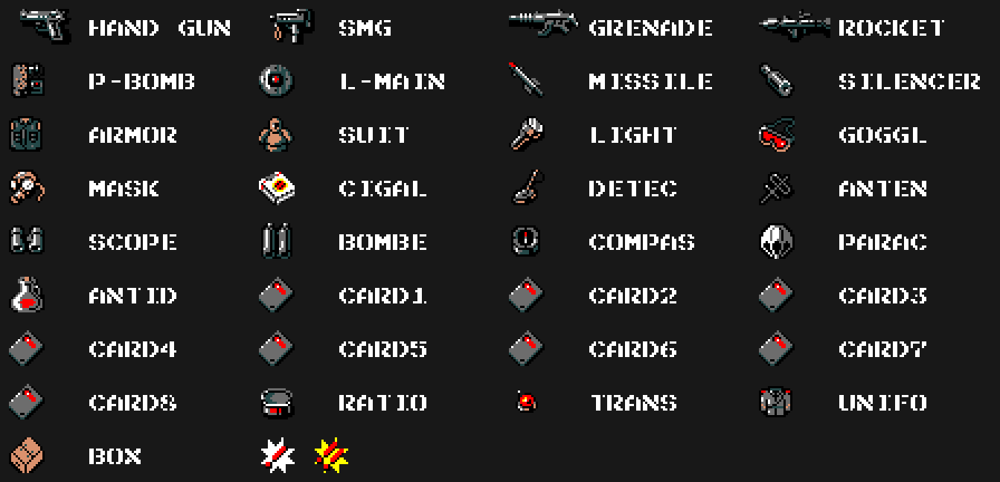
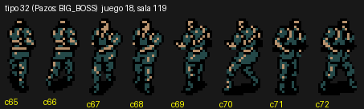
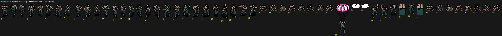
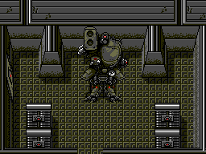
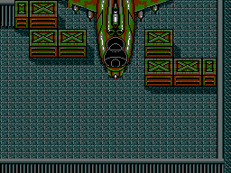
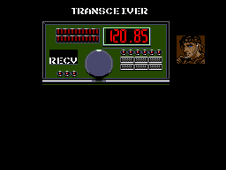
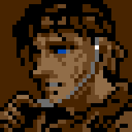

Metal Gear (Konami, 1987, RC-750) es el primer juego de la saga para MSX2. Snake entra solo en Outer Heaven, sin armas, y tiene que llegar hasta Metal Gear. Todo lo que hay en esta página sale de las tablas del cartucho.
El índice de salas (p13:6000) tiene 251 entradas, de las que 16 no son salas (su puntero cae en la tabla de nibbles): quedan 235 salas. Cada sala son 6 × 8 metafichas de 4 × 4 fichas (p13:61F6, p13:6274), de uno de 8 juegos de fichas.
Las salas se unen de dos maneras:
p05:8E0E, en el orden arriba, abajo, izquierda y derecha (p01:63FC decide por qué lado se sale);p15:A7C0 da, sala a sala, fichas de 5 bytes [puerta][tipo][Y][X][sala de destino]. Hay 154 puertas numeradas, y cada una aparece en las dos salas que une.Siguiendo las vecinas salen 9 zonas. Las salas a las que solo se llega por una puerta van en una tira debajo del mapa de su zona.

Los mapas de las nueve zonas, a tamaño real: 0, 1, 2, 3, 4, 5, 6, 7, 8.
Las salas 0xF0 a 0xFA son ascensores. p05:8DA8 da sus paradas; la cabina para en las alturas 0x38, 0x78 y 0xB8 (p09:AD69). Los F8 y F9 no tienen paradas.
El tipo de puerta decide cómo se dibuja (p01:773C): los tipos 1 a 5 son fichas de la página 1, el 6 es el ascensor y del 7 al 19 son dibujos del banco
p15:B046) decide cómo se abre (p01:78F4): mirando haciaella, con la tarjeta elegida (clases 2 a 9 = CARD1 a CARD8), a puñetazos, con la P.BOMB o con una bandera que pone un texto.
Ocho armas (p06:B865): HAND GUN, SMG, GRENADE, ROCKET, P.BOMB, L.MINE, MISSILE y SILENCER. Veinticinco objetos (p06:B8F6): ARMOR, SUIT, LIGHT, GOGGL, MASK, CIGAL, DETEC, ANTEN, SCOPE, BOMBE, COMPAS, PARAC, ANTID, CARD1 a CARD8, RATIO, TRANS, UNIFO y BOX. Lo que suma cada uno al cogerlo está en p05:8AE8; los máximos de munición y raciones dependen de la CLASS (p02:9101).

Cada arma y cada objeto tiene su dibujo en la página 1 de la VRAM (p06:B855 las armas, p06:B8C0 los objetos); la ventana de equipo lo copia con su nombre (p00:47A6), aquí escrito con la fuente del juego tal como lo guarda la ROM (el arma 6 dice «L.MAIN», p06:B89E). Las ocho tarjetas comparten dibujo. Al final, los dos avisos que salen encima del soldado que ve a Snake (p02:98B5): «!», o «!!» si 0xC614 no es cero, y entonces llegan refuerzos cada 0x1E cuadros.

64 tipos de actor. Cada uno tiene su número de sprites (p05:971B), sus colores (p05:975A), su aguante (p05:984F), su caja de choque por arma (p05:8951, p05:8992) y su daño por arma (p05:87B7). Sus 143 cuadros están en p05:9890, y sus patrones en 31 juegos de sprites (p10:6185, p10:6280). Los nombres de los tipos que se citan son los de Manuel Pazos.

Snake tiene 53 poses (p10:6000) en los patrones 0x00-0x37; los de la sala empiezan en el 0x38.

Metal Gear y el Hind D no son sprites: son dibujos de fichas del banco 15 (p15:B595, p15:B431) que p00:44AF pone encima de la sala.


Metal Gear solo se rompe con la P.BOMB y con los 16 golpes en el orden de p02:8D3B. Después corre una cuenta atrás desde 3000 y el final se alcanza saliendo por arriba de la sala 0xE2.
Siete frecuencias, de 120.13 a 120.91 (p00:490C). Las llamadas de cada sala están en p15:B6C6; la que suena es la que tiene la frecuencia puesta y pasa las condiciones de p01:6A88.

Hay un solo retrato, el de Snake (p09:ABA1): los demás no tienen cara. Solo mueve la boca con los textos 0x0A (su SEND) y 0x9B: con cada letra, una cada 4 cuadros, elige uno de tres dibujos según la cuenta de cuadros (p00:5E17: p15:B425, p15:B42B o la boca cerrada p15:B41F).
